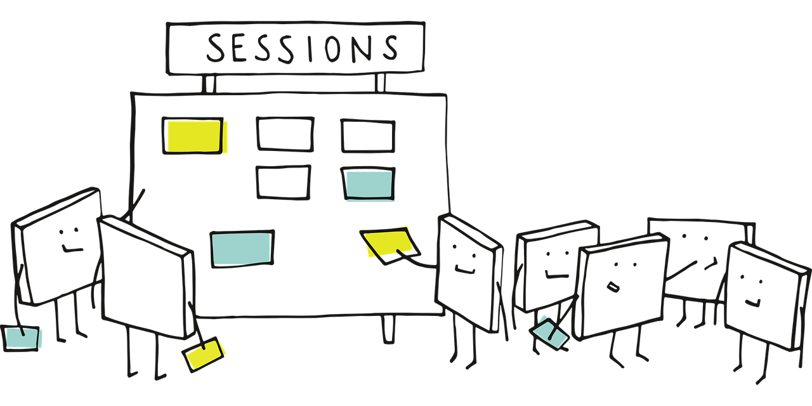
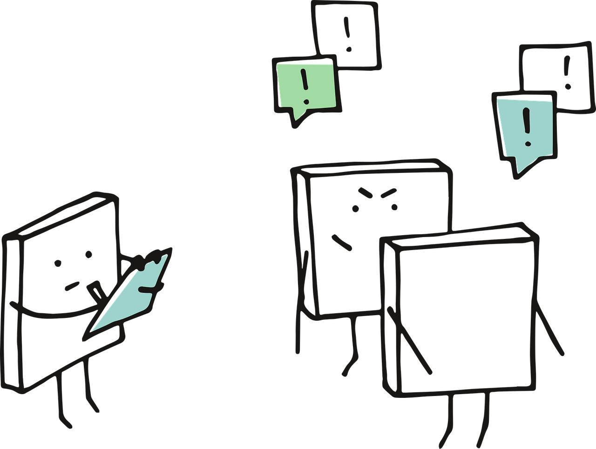
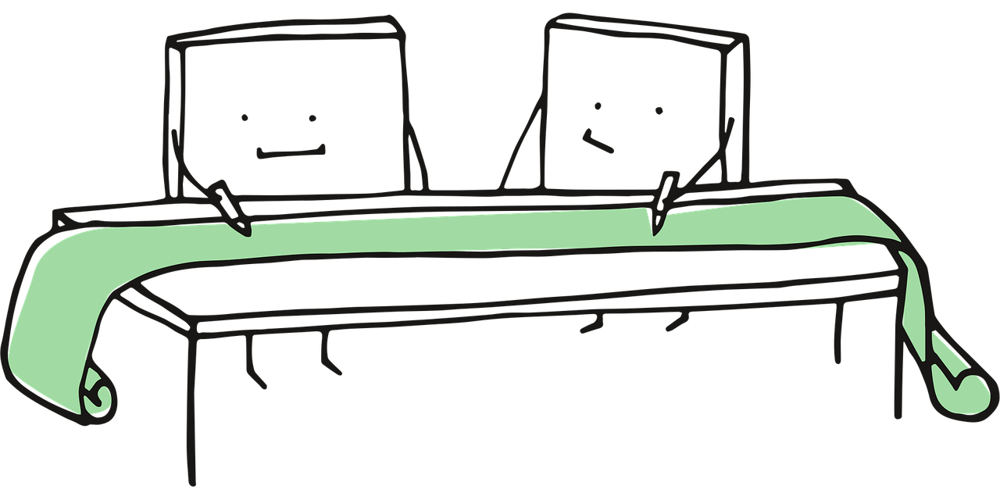
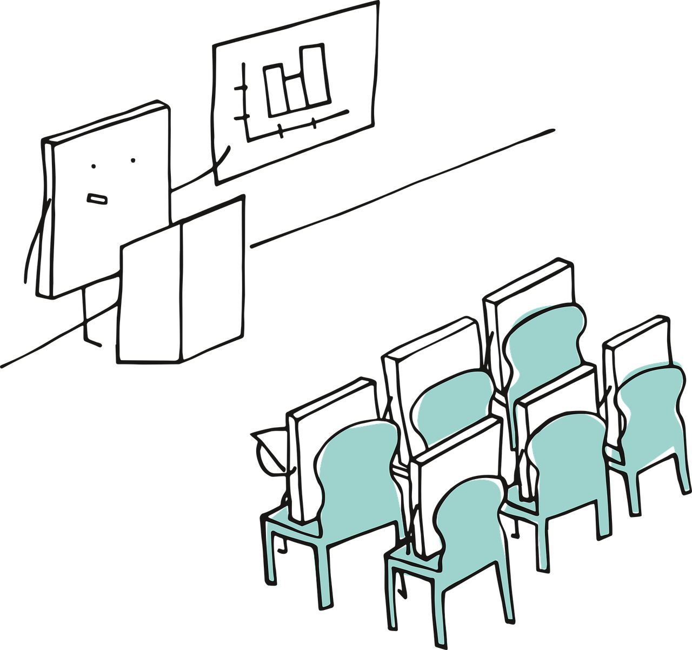
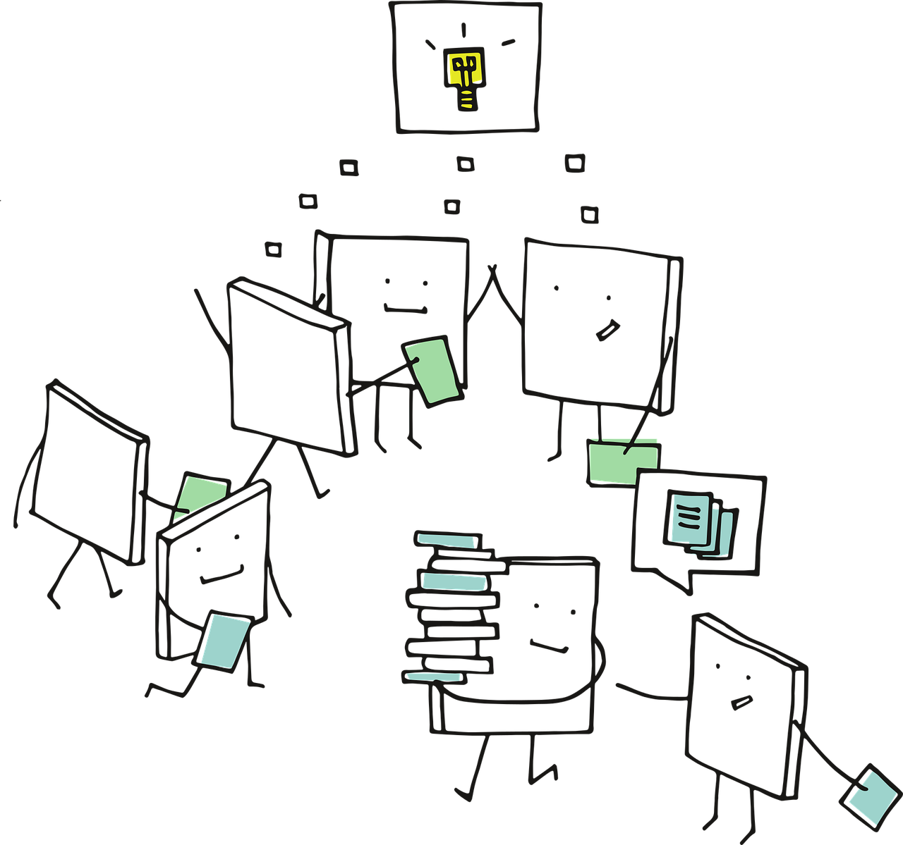

Course Lesson Plan

This section of the final deliverable presents a concise thirteen-week lesson plan for a fourth-year undergraduate course in causal inference. The lesson plan is limited in scope due to the following reasons:
The lesson plan encompasses comprehensive learning goals for each lecture throughout the entire term, with specific action verbs aligned with the revised Bloom’s taxonomy (Bloom et al. 1956) as defined by Anderson and Krathwohl (2001). This revised taxonomy organizes the six levels of the cognitive domain (related to learning) as follows:
- Remember: Recall information from long-term memory, including statistical concepts learned in previous courses.
- Understand: Comprehend the causal inference concepts covered in the classroom.
- Apply: Implement these causal inference concepts in various practical scenarios.
- Analyze: Identify parallels and use critical reasoning to establish patterns and connections. For example, this could involve comparing outputs from different strategies applied in the causal models taught in the course.
- Evaluate: Assess practical ideas based on established criteria and standards. This level may involve evaluating previously published causal studies.
- Create: Develop new causal studies based on all the knowledge acquired throughout this course.
Each week consists of two lecture sessions, each lasting one hour and thirty minutes.
The lesson plan connects each week to one or two of the eight stages outlined in the course roadmap. For reference, you can revisit the corresponding section of the deliverable. This structure is consistent with the previously described course format.
In each lecture, we will aim to align the learning goals with specific scholarly content, such as textbooks or academic papers.
The lesson plan does not include detailed instructional components for each lecture, such as time allocation, learning strategies, or in-class activities.
While we provide the course assessment structure (i.e., weights for assignments), this lesson plan does not elaborate on specific formative and summative assessments.
The final four weeks of the course will not be used to introduce students to additional modelling techniques in causal inference (as outlined in stages 4 and 5 of the roadmap) or to discuss general guidelines for interpreting, reporting, and storytelling in causal studies (as detailed in stages 6, 7, and 8 of the roadmap). Instead, students are expected to focus on the following major deliverables:
- Weeks 10 and 11 will be dedicated to a team-based appraisal presentation of an already published causal study, utilizing the roadmap covered throughout the course. There will not be a written report; only an oral presentation is required.
- Weeks 12 and 13 will focus on a team-based final project where students will conduct their final causal study using a provided dataset and following the causal roadmap. Instead of a final oral presentation, a written report will be submitted to replace the in-class final exam.
Therefore, for the above weeks, there will not be mapped scholarly materials.
1 Lecture Breakdown
Below is a weekly breakdown of the learning goals per lecture. Additionally, we provide a brief summary of each learning week and outline the expectations at the end of the respective two lectures.
1.1 Know your Research Question! (stage 1 in the roadmap)
During week 1, the instructor is expected to introduce students to a foundational mindset in causal inference, which will be linked to the course’s inferential roadmap. The primary goal for this week is to help students develop the skill to distinguish between statistical inquiries involving association or causation in scientific research. Additionally, students will be introduced to the causal roadmap, which consists of eight stages: (1) research question, (2) causal model representing knowledge, (3) counterfactuals and causal parameters, (4) defining a statistical model, (5) model fitting (estimation), (6) interpretation, (7) reporting, and (8) storytelling. This roadmap will serve as the main pillar of the course’s learning strategy.
Furthermore, students will explore real-world examples to understand that causal inference is not merely an isolated statistical technique for modelling data (such as solely fitting ordinary-least squares or binary logistic regression to a dataset). Instead, it represents a comprehensive thought process about counterfactual outcomes (i.e., potential values of \(Y\)) and potential treatment interventions (i.e., potential values of \(X\)). By the end of this week, students should be able to comprehend the philosophical and practical differences between asking:
Is \(X\) associated with \(Y\)?
and
Does \(X\) cause \(Y\)?
1.1.1 Lecture 1
By the end of this lecture, students should be able to:
- Describe what causal inference is along with its usefulness in scientific research (remember level).
- Explain how causation and association differ via practical examples (understand level).
- Classify different types of research questions in terms causation and association (understand level).
- Identify the components of a causal questions, e.g., treatment, outcome, and population.
The above goals can be mapped to the following materials:
- Chapter 2 (Research Questions) from Huntington-Klein (2021) and Chapter 1 (A definition of causal effect) from Hernán (2024) and Roadmap Overview & Roadmap Step 0 - Research Question (Lecture 1a - Why Bother with Causal Inference?) from Petersen and Balzer (2014).
- Chapter 1 (Correlation, Association, and the Yule-Simpson Paradox) from Ding (2024) and Roadmap Overview & Roadmap Step 0 - Research Question (Lecture 1b - Causal vs. Statistical inference) from Petersen and Balzer (2014).
- Chapter 1 (Introduction - Do Not Confuse Correlation with Causality) from Cunningham (2021) and Roadmap Overview & Roadmap Step 0 - Research Question (Lecture 1c: The Causal Roadmap Steps 0-3) from Petersen and Balzer (2014).
- Chapters 2 (Randomized Experiments) and 3 (Observational Studies) from Hernán (2024) and Chapter 2 (Potential Outcomes) from Ding (2024).
1.1.2 Lecture 2
By the end of this lecture, students should be able to:
- Explain the steps of the causal inference roadmap (understand level).
- Examine real-life study descriptions to identify whether they pose a causal or association question (analyze level).
- Formulate well-structured causal questions based on a given observational or experimental context. (create level).
- Assess the validity and clarity of causal questions in peer-reviewed studies (evaluate level).
The above goals can be mapped to the following materials:
- Roadmap Overview & Roadmap Step 0 - Research Question (Lecture 1c - The Causal Roadmap) from Petersen and Balzer (2014). Recall that the roadmap for this course is inspired by this reference. Hence, this material can be used as a baseline to introduce our roadmap.
- For this learning goal, the instructor could provide a summary of the following four published papers (two of which pose causal questions, whereas the other two pose association questions):
- Causal questions:
- Association questions:
- Roadmap Overview & Roadmap Step 0 - Research Question (Lecture 1c - The Causal Roadmap) from Petersen and Balzer (2014).
- Morgan and Winship (2007) provide a fair list of referenced examples in Chapter 1 (Introduction), specifically in sections 1.3.1 (Broad Examples from Sociology, Economics, and Political Science) and 1.3.2 (Narrow and Specific Examples).
1.2 Using Graphical Models to Depict Causality (stage 2 in the roadmap)
During week 2, students will have their first exposure to directed acyclic graphs (DAGs). According to the course roadmap, DAGs are graphical models that represent knowledge about causal inquiries, which we are expected to develop in collaboration with subject-matter experts. We will view DAGs as essential tools for visualizing and reasoning about causal relationships.
The week will begin with a formal introduction to DAG syntax and terminology. After that, students will engage in hands-on practice constructing DAGs based on real-world scenarios from various scientific fields. Additionally, we will differentiate between experimental, quasi-experimental, and observational studies to demonstrate how DAGs can help identify assumptions in different study designs. By the end of the week, students should understand why DAGs offer valuable insights into causal logic, which will be beneficial for the subsequent stages of the course roadmap.
1.2.1 Lecture 3
By the end of this lecture, students should be able to:
- Explain key components of DAGs, including nodes, directed edges, and acyclic structure (understand level).
- Illustrate how DAGs represent causal assumptions and the concept of d-separation (understand level).
- Compare DAGs derived from experimental, quasi-experimental, and observational designs to assess differences in identifiability (analyze level).
- Construct simple DAGs to represent real-life study scenarios (analyze level).
The above goals can be mapped to the following materials:
- Chapter 6 (Graphical Representation of Causal Effects) from Hernán (2024) and Chapter 6 (Causal Diagrams) from Huntington-Klein (2021).
- Chapter 6 (Graphical Representation of Causal Effects) from Hernán (2024).
- The following papers can be used to develop material to address this goal:
- “How to develop causal directed acyclic graphs for observational health research: a scoping review” by Poppe et al. (2025).
- “Reducing bias in experimental ecology through directed acyclic graphs” by Arif and Massey (2023)
- “Utilizing Causal Diagrams across Quasi-Experimental Approaches” by Arif and MacNeil (2022).
- Chapter 7 (Drawing Causal Diagrams) from Huntington-Klein (2021).
1.2.2 Lecture 4
By the end of this lecture, students should be able to:
- Create DAGs to represent hypothetical causal mechanisms based on subject-matter expertise (create level).
- Identify common structures in DAGs such as confounding, mediating, backdoor criterion, and colliding paths (analyze level).
- Evaluate the adequacy of DAGs constructed by peers or drawn from published studies, focusing on clarity and underlying assumptions (evaluate level).
- Differentiate between experimental, quasi-experimental, and observational study designs using DAGs to illustrate assumptions and limitations (understand level).
The above goals can be mapped to the following materials:
- To address this goal, the students could have hands-on practice with the cases depicted by Morgan and Winship (2007) provide a fair list of referenced examples in Chapter 1 (Introduction), specifically in sections 1.3.1 (Broad Examples from Sociology, Economics, and Political Science) and 1.3.2 (Narrow and Specific Examples).
- Chapter 8 (Causal Paths and Closing Back Doors) from Huntington-Klein (2021), Chapter 7 (Confounding) from Hernán (2024), and Chapter 1 (Causal Graphs, Identification, and Models of Causal Exposure) from Morgan and Winship (2007).
- To address this goal, students are expected to assess the DAGs delivered in goal (1) while applying the concepts addressed in goal (2).
- The developed material from lecture 3, to address the respective goal (3), can be used to fulfil this goal.
1.3 Introduction to Counterfactuals (stage 3 in the roadmap)
Week 3 focuses on both the theoretical and practical aspects of counterfactuals. As outlined in the course roadmap, counterfactuals play a crucial role in the entire causal inference process. They are an essential component of the structural causal model (SCM), which is a mathematical framework for illustrating the causal relationships between variables within a given system. This SCM framework will also provide students with computational tools to connect DAGs, discussed in week 2, with counterfactual reasoning.
The workflow for this week begins with defining the DAG in the context of a causal inference inquiry within a specific system. Students will then derive a SCM composed of equations that represent the data-generating process for each variable. These equations explicitly illustrate the mechanisms that produce counterfactual outcomes, such as:
What would happen to an outcome \(Y\) if treatment \(X\) were set to a different value?
This type of inquiry is essential for formulating and interpreting what we refer to as causal parameters, such as the average treatment effect (ATE).

By the end of the week, students are expected to learn how to use code-based simulations in R to apply the logic associated with DAGs, SCMs, and counterfactuals through simple scenarios. They will simulate interventions, explore counterfactuals, and compute causal parameters to address research questions effectively. This process specifically involves examining how potential outcomes arise from different interventions, which allows us to connect our findings back to the DAG and ultimately enables us to produce valid causal claims. It is essential to emphasize to students that our simulated causal parameters must align with the research question(s) established in stage 1 of the roadmap.
1.3.1 Lecture 5
By the end of this lecture, students should be able to:
- Explain the structure and components of a SCM derived from a DAG (understand level).
- Explain the conceptual link between structural equations and counterfactual outcomes (understand level).
- Implement simple SCMs using code to simulate counterfactual scenarios (apply level).
- Classify the types of causal questions that we can answer from a given SCM and DAG (understand level).
The above goals can be mapped to the following materials:
- Chapters 3 (Observational studies) and 5 (Interaction) from Hernán (2024). These chapters offer a comprehensive theoretical content. For in-class material, Roadmap Step 1 - Causal Model (Lecture 2a - Intro to Structural Causal Models), from Petersen and Balzer (2014), is a fair starting point.
- Chapter 2 (The Counterfactual Model) from Morgan and Winship (2007); this chapter offers a comprehensive theoretical content. For in-class material, Roadmap Step 1 - Causal Model (Lecture 2b - How SCMs encode causal assumptionss), from Petersen and Balzer (2014), is a fair starting point.
- Chapter 4 (Potential Outcomes Causal Model), from Cunningham (2021), provides simple coding examples via
Rthat the instructor could use in their in-class material. - For in-class material, Roadmap Step 1 - Causal Model (Lecture 2c - SCMs & Directed Acyclic Graphs), from Petersen and Balzer (2014), is a fair starting point. Moreover, students can continue with the DAGs constructed to address goal (4) from lecture 4 to deliver the corresponding SCMs for the corresponding experimental, quasi-experimental, and observational designs.
1.3.2 Lecture 6
By the end of this lecture, students should be able to:
- Interpret counterfactual quantities such as \(Y(a)\), the potential outcome under treatment level \(a\) (understand level).
- Implement causal parameters (e.g.; ATE or average treatment effect on the treated, ATT) from simulated SCMs using counterfactual logic (apply level).
- Identify causal parameters with specific scientific research questions (apply level).
- Design small simulation exercises to test assumptions underlying counterfactual inference (create level).
The above goals can be mapped to the following materials:
- Chapters 3 (Observational studies) and 5 (Interaction) from Hernán (2024). These chapters offer a comprehensive theoretical content.
- There are two potential sources of material we can use to fulfill this goal:
- The first one is less technical and it is Chapter 10 - Treatment Effects from Huntington-Klein (2021). If the instructor chooses to use more technical content during class time, this might be an ideal pre-lecture material.
- The second one is Chapter 4 (Potential Outcomes Causal Model), from Cunningham (2021). This material is more technical.
- Students are expected to fulfill this learning goal by using the SCMs delivered in lecture 5 for its corresponding goal (4).
- Students are expected to continue working with the SCMs from the above goal (3). Now, it is time to code the SCMs delivered from the corresponding experimental, quasi-experimental, and observational designs.
1.4 Defining the Statistical Model: Observed Data and Identifiability Conditions (stage 4 in the roadmap)
During week 4, the instructor is expected to connect the causal model represented by DAGs and SCMs with the corresponding statistical model, with a focus on the identifiability of causal parameters. We start by recalling DAGs as formal representations of causal assumptions. From these DAGs, we construct SCMs, specifying structural equations and endogenous variables that determine counterfactual outcomes. Once the SCM is defined, we analyze how these counterfactuals relate to observed data, emphasizing that only a subset of potential outcomes can be observed.
A key focus this week is on the spectrum of assumptions in statistical modelling. Parametric models specify a complete probability distribution (for example, ordinary least-squares regression with normally distributed errors), while semi-parametric models relax some of these specifications (like Cox models). Non-parametric models impose minimal assumptions on the functional form, relying solely on the assumptions encoded in the DAG.

In the second half of the week, we define identifiability as the condition under which a causal parameter (such as the ATE) can be expressed as a function of the observed data distribution. Students will learn to utilize d-separation and the back-door criterion as tools to determine when identifiability holds, given the assumptions of no unmeasured confounding and positivity.
We will evaluate how each type of statistical model (parametric, semi-parametric, and non-parametric) impacts identifiability. The week will conclude with a comparative discussion across disciplines—such as epidemiology, economics, and statistics—of the various terminologies and conceptual frameworks used to express identifiability conditions. For example, students will explore the relationship between the stable unit treatment value assumption (SUTVA), ignorability in econometrics, and conditional exchangeability in epidemiology. This reflection will help students understand how each domain approaches the identifiability problem through its unique perspective.
1.4.1 Lecture 7
By the end of this lecture, students should be able to:
- Define how DAGs and SCMs formalize causal assumptions and determine potential outcomes (remember level).
- Construct a SCM from a DAG using structural equations and endogenous variables (apply level).
- Examine the relationship between SCMs and observed data, identifying which counterfactuals are observed versus unobserved (analyze level).
- Distinguish between parametric, semi-parametric, and non-parametric statistical models, and their implications for inference (analyze level).
The above goals can be mapped to the following materials:
- Roadmap Step 2 - Counterfactuals & Causal Effects (Lecture 3a - Defining Counterfactuals) from Petersen and Balzer (2014).
- Roadmap Step 2 - Counterfactuals & Causal Effects (Lecture 3b - Deriving Counterfactuals from the Causal Model) and Lecture 3c (Using Counterfactuals to Define Causal Effects) from Petersen and Balzer (2014).
- Roadmap Step 3 - Observed Data (Lecture 5a - Specify the observed data & their link to the causal model and Lecture 5b - Causal models & (in)dependence in the observed data) from Petersen and Balzer (2014).
- Roadmap Step 3 - Observed Data (Lecture 5c - Defining the Statistical Model) from Petersen and Balzer (2014).
1.4.2 Lecture 8
By the end of this lecture, students should be able to:
- Determine whether a causal parameter is identifiable using d-separation and the back-door criterion (evaluate level).
- Assess whether key identifiability conditions—no unmeasured confounding and positivity—hold in study designs (evaluate level).
- Compare how different statistical modelling assumptions (parametric, semi, non-parametric) affect identifiability (understand level).
- Build a visual map that translates vocabulary across disciplines: SUTVA, ignorability, independence, and exchangeability (create level).
Chapter 5 - Identification, from Huntington-Klein (2021), offers a smooth introduction to identifiability. It could be used as a pre-reading.
The above goals can be mapped to the following materials:
- Chapter 3 (Observational Studies) from Hernán (2024). Also, Roadmap Step 4 - Identifiability & Step 5 - Estimation Problem (Lecture 6a - Overview & Intuition for Identifiability and Lecture 6c - The Backdoor Criterion) from Petersen and Balzer (2014).
- Roadmap Step 4 - Identifiability & Step 5 - Estimation Problem (Lecture 6d - The Positivity Assumption) from Petersen and Balzer (2014).
- Chapter 11 (Why Model?) from Hernán (2024)
- Section 4.1.5, from Cunningham (2021), provides a detailed elaboration on SUTVA. On the other hand, Kamath, Graham, and Naylor (2023) provide a chapter elaborating on the rest of the terms.
1.5 Inverse Probability Weights (stages 4 and 5 in the roadmap)
Week 5 introduces inverse probability weighting (IPW) as the first method in the course for estimating causal effects from observational data. Building on the identifiability assumptions discussed in week 4, we will now focus on the statistical estimation of causal parameters using weights derived from the treatment assignment mechanism. Students will be guided through both the conceptual rationale and the mathematical foundations of IPW. Specifically, we will explore how IPW constructs a pseudo-population in which treatment is independent of confounders, allowing us to recover the causal estimand from observed data. We will emphasize the critical conditions under which this estimator is valid, particularly the no unmeasured confounding and positivity assumptions.
The week is divided into two sessions. The first session focuses on developing theoretical insights into the IPW framework, while the second session emphasizes practical implementation using R. Students will learn how to estimate weights, assess their quality, and use diagnostic tools to detect violations of key assumptions, such as positivity. We will work with both real and simulated datasets to visualize weight distributions, evaluate performance, and interpret the causal estimates obtained through IPW. This week also provides an opportunity to connect the theoretical framework to concrete software tools, such as the {ipw} (van der Wal and Geskus 2011) and {WeightIt} (Greifer 2025) R packages.
1.5.1 Lecture 9
By the end of this lecture, students should be able to:
- Define IPWs and describe their purpose in causal effect estimation (remember level).
- Explain how IPW adjusts for measured confounding by reweighting observations to achieve exchangeability (understand level).
- Examine the assumptions required for valid IPW estimation, including positivity and no unmeasured confounding, and discuss what happens when these assumptions are violated (analyze level).
The above goals can be mapped to the following materials:
- Chapter 2 (Randomized Experiments), from Hernán (2024), where Section 2.4 specifically introduces IPW in a non-parametric way. Then, Chapter 12 (IP Weighting and Marginal Estructural Models) elaborates on IPW in a parametric way. Also, Roadmap Step 6B - Estimation with IPW (Lecture 9b - Intro to the IPW Estimator), from Petersen and Balzer (2014), offers a fair starting point for in-class material.
- Chapter 12 (IP Weighting and Marginal Estructural Models) provides a complete technical elaboration. Moreover, Roadmap Step 6B - Estimation with IPW (Lecture 9b - Intuition and Implementation of IPW), from Petersen and Balzer (2014), offers a fair starting point for in-class material.
- Chapter 12 (IP Weighting and Marginal Estructural Models) provides a complete technical elaboration. Furthermore, Roadmap Step 6B - Estimation with IPW (Lecture 9c - Impact of Positivity Violations on Estimator Performance), from Petersen and Balzer (2014), offers a fair starting point for in-class material.
1.5.2 Lecture 10
By the end of this lecture, students should be able to:
- Utilize IPW to estimate average treatment effects using regression models in
R(apply level). - Create a simulated dataset with known treatment effects and counterfactuals to evaluate the performance of IPW under controlled conditions (create level).
- Assess the quality of estimated IP weights by visualizing their distribution, identifying extreme weights, and interpreting ATE sensitivity to such weights (evaluate level).
The above goals can be mapped to the following materials:
- van der Wal and Geskus (2011) provide an overview of the
{ipw}package with general theoretical background on IPW along with examples via real data. Heiss (2020) provides an example via real data to illustrate both the use of{ipw}and{WeightIt} - van der Wal and Geskus (2011) provide an simulated example via the package
{ipw}. - Roadmap Step 6B - Estimation with IPW (Lecture 9c - Impact of Positivity Violations on Estimator Performance), from Petersen and Balzer (2014), offers a fair starting point for in-class material. Moreover, they provide a full lab exercise on IPW.
1.6 G-estimation for Causal Parameters (stages 4 and 5 in the roadmap)
Week 6 introduces students to G-estimation methods for identifying and estimating causal parameters. This builds directly on the counterfactual framework and the potential outcomes approach developed in previous weeks. G-estimation enables us to estimate causal effects in the presence of time-varying confounders. Students will learn the intuition behind G-estimation and its conceptual connection to structural nested models (SNMs).

This week’s lectures will integrate statistical theory, identification strategies, and applied estimation using R. First, students will learn about the formulation of G-estimation and how it differs from IPW. Next, students will simulate longitudinal data, implement G-estimation in R, and assess the performance of these models in accurately estimating causal parameters. The week will conclude with a discussion on model diagnostics for G-estimation.
1.6.1 Lecture 11
By the end of this lecture, students should be able to:
- Define the assumptions required for G-estimation (remember level).
- Explain the differences between G-estimation and IPW (understand level).
- Derive the estimating equations used in G-estimation (apply level).
- Assess when G-estimation is preferable to IPW in terms of finite sample efficiency and bias (evaluate level).
Sterne and Tilling (2002) provide a smooth introduction to G-estimation in sections 1 and 2, while the remaining content focuses on its application in Stata. These two initial sections can be used as pre-reading material.
The above goals can be mapped to the following materials:
- Chapter 14 (G-estimation of structural nested models) from Hernán (2024).
- Daniel et al. (2013) provide a fair biostatistical tutorial that describes both methods, highlighting their relationships and differences. Additionally, they guide the reader on how to choose between them.
- Chapter 14 (G-estimation of structural nested models) from Hernán (2024).
- As in the case of learning goal (2), Daniel et al. (2013) is a fair starting point.
1.6.2 Lecture 12
By the end of this lecture, students should be able to:
- Implement G-estimation using different
Rpackages (apply level). - Simulate longitudinal data under a known data-generating process with time-varying confounding (apply level).
- Execute model diagnostics on G-estimation modelling (apply level).
The above goals can be mapped to the following materials:
- Loh and Ren (2023) provide a tutorial on G-estimation using simulated data via the
{lavaan}package. In contrast, M. Wallace et al. (2025) offered a tutorial using the{DTRreg}package, employing both totally simulated data and simulated data inspired by real data. - For this learning goal, we can use the work by Loh and Ren (2023) and M. Wallace et al. (2025) Moreover, M. P. Wallace, Moodie, and Stephens (2017) provide an additional simulated example via
{DTRreg}. - Rich et al. (2010) provide a fair overview on residual diagnostic plots for G-estimation via simulated and real data.
1.7 Causal Mediation Analysis (stages 4 and 5 in the roadmap)
Causal mediation analysis (CMA) allows researchers to go beyond merely estimating total causal effects and to examine the underlying mechanisms through which these effects occur. In week 7, students will learn how to decompose causal effects into direct effects (the part of the treatment effect not explained by a mediator) and indirect effects (the portion transmitted through a mediator). By studying mediation analysis within the course framework, students will gain insights into the challenges of making causal claims about underlying mechanisms. This week will also introduce counterfactual definitions of natural direct and indirect effect. Additionally, students will explore how to implement these concepts in practice by linking theoretical assumptions to the modelling framework used in the {mediation} R package (Imai et al. 2010).
The first lecture covers the conceptual foundations of CMA and formal counterfactual definitions of mediation effects. Students will build a solid theoretical understanding by studying concepts such as average causal mediation effects (ACME), average direct effects (ADE), and the assumptions required for their identification, particularly sequential ignorability. DAGs will illustrate how mediators function within causal systems and highlight common threats, such as unmeasured mediator–outcome confounding.
The second lecture shifts focus to the practical estimation and application of mediation analysis using the {mediation} package. Students will learn how to fit mediator and outcome models, extract ACME and ADE estimates, and conduct sensitivity analyses to evaluate robustness against unmeasured confounding. The week will conclude with a short applied exercise where students design and execute their own mediation analysis, integrating theoretical reasoning with empirical estimation.
Chapter 1 (Introduction and Background) from Hu (2024) provides a brief and clear introduction to CMA in various disciplines of social sciences. It could be used as pre-reading material.
1.7.1 Lecture 13
By the end of this lecture, students should be able to:
- Explain the concepts of direct, indirect, and total causal effects, and how they relate to CMA (understand level).
- Describe the assumptions necessary for causal mediation, particularly sequential ignorability, and illustrate these using causal DAGs (remember level).
- Translate a causal mediation research question into testable models for mediator and outcome variables, specifying them in a way consistent with the assumptions of causal inference (understand level).
- Assess the plausibility of mediation assumptions in a given applied setting: experimental, quasi-experimental, or observational (evaluate level).
- Demonstrate, with simple examples, how mediator and outcome models can be specified within the
{mediation}Rpackage, linking software workflow to the theoretical framework (understand level).
The above goals can be mapped to the following materials:
- Chapter 2 (Mediation in the Causal Inference Framework) from Hu (2024), specifically Section 2.2.
- Chapter 2 (Mediation in the Causal Inference Framework) from Hu (2024), specifically Section 2.3.
- “The moderator-mediator variable distinction in social psychological research: conceptual, strategic, and statistical considerations” by Baron and Kenny (1986).
- There are three potential sources of material we can use to fulfill this goal:
- “Yes, but what’s the mechanism? (don’t expect an easy answer)” from Bullock, Green, and Ha (2010) for experimental studies.
- “Identifiability and Exchangeability for Direct and Indirect Effects” from Robins and Greenland (1992) for observational and experimental studies.
- “Causal mediation analysis in economics: Objectives, assumptions, models” from Celli (2021) for quasi-experimental studies.
- Examples found in Tingley et al. (2023).
1.7.2 Lecture 14
By the end of this lecture, students should be able to:
- Use the
{mediation}Rpackage to fit mediator and outcome models, estimate ACME, ADE, and total effects (apply level). - Conduct sensitivity analysis with
medsens()in the{mediation}package to examine robustness to unmeasured confounding of the mediator–outcome relation (apply level). - Design and implement a mini mediation analysis on a provided dataset, integrating theoretical assumptions, estimation procedures, and interpretation of results (create level).
The above goals can be mapped to the following materials:
- Chapter 3 (Estimation of the Causal Mediation Analysis) from Hu (2024).
- Chapter 5 (Sensitivity Analysis) from Hu (2024).
- A Practical Guide to Causal Mediation Analysis: Illustration With a Comprehensive College Transition Program and Nonprogram Peer and Faculty Interactions from Chi et al. (2022). This paper provides a step-by-step guide using the
{mediation}package with an accessible college transition program dataset.
1.8 Interpretation and report (stages 6 and 7 in the roadmap)
The causal roadmap does not conclude with the application of any one of the previous estimation methods. Therefore, during week 8, students will shift from point estimation of causal effects to providing corresponding interpretations of those effects alongside the communication of their findings. This communication requires researchers to articulate their modelling assumptions, contextualize the estimation results, and, quite importantly, report the uncertainty associated with these estimates. The instructor is expected to introduce students to the principles of causal interpretation. Special attention will be given to linking statistical evidence with the causal roadmap framework and discussing the limitations of methods in applied contexts.
Students are expected to learn how to translate technical causal findings into narratives suitable for academic papers, policy briefs, or industry reports. The instructor must emphasize how to convey both point estimates and interval estimates (i.e., confidence intervals) along with sensitivity analysis. By the end of this week, students should be prepared to produce causal inference reports that will be used in the following week when they will practice storytelling.
1.8.1 Lecture 15
By the end of this lecture, students should be able to:
- Explain the distinction between statistical significance, effect size, and causal relevance when presenting findings (understand level).
- Interpret causal effect estimates in the context of research questions, including both point and interval estimates (understand level).
- Assess robustness of causal conclusions by incorporating sensitivity analyses (evaluate level).
1.8.2 Lecture 16
By the end of this lecture, students should be able to:
- Summarize causal inference study designs, assumptions, and results in structured reporting formats (understand level).
- Outline visualization techniques to communicate causal results clearly (understand level).
- Explain how a causal inference report is structured in regards to assumptions, identifiability, estimation results, sensitivity analyses, and limitations (understand level).
1.8.3 Overall Material Mapping
This week, we will not map scholarly materials by learning goal. Instead, we will provide a complete set of materials for the entire week:
- Roadmap Step 6E - Inference & Step 7 - Interpretation (Lecture 13a - Okay! We have a point estimate; what about a variance estimate?; Lecture 13c - Introduction to the Non-parametric Bootstrap; and Lecture 13d - Interpretation!, from Petersen and Balzer (2014), offers a fair starting point for in-class material. Moreover, they provide lab exercises on point and interval estimation.
- Elm et al. (2007) provide a whole checklist on the elements that must be included when reporting results on observational studies in epidemiology. It is part of the Strengthening the Reporting of Observational Studies in Epidemiology (STROBE) Initiative.
- On the other hand, Schulz et al. (2010) provide a whole checklist on the elements that must be included when reporting results on parallel group randomized trials in healthcare. This is the 2010 version of the Consolidated Standards of Reporting Trials (CONSORT) statement.
1.9 Storytelling (stage 8 in the roadmap)

In week 9, we will focus on the storytelling stage of the course’s roadmap. This involves translating the entire statistical research into a compelling, transparent, and coherent narrative for the relevant stakeholders. We dedicate a full week to this stage because it is essential to emphasize the technical training from the previous stages while also crafting this final narrative for effective communication with our target audience, which might pertain to technical peers or policy stakeholders. Students are expected to learn how to structure their causal analysis by starting with the study’s motivation and research question, followed by the graphical and statistical models, and concluding with interpretable and well-contextualized findings. The primary goal for this week is to teach students how to integrate the inferential process with effective communication skills.
Students will work with completed causal analyses, specifically the ones from week 1 in lecture 2, which were used to distinguish between causal and association questions (Angrist and Krueger 1991; Card 1995). Since these real-life studies are comprehensive, students will be tasked with reframing them into well-crafted narratives that balance transparency and audience engagement. On the other hand, the instructor will teach best practices related to data storytelling, scientific writing, and proper DAG elaboration. While the instructor provides instruction and quick examples, students will engage in hands-on practice using one of the two causal analyses mentioned earlier. By the end of the week, students will have a clear understanding of the practical skills needed to narrate a causal analysis from start to finish. This will prepare them for the appraisal and dataset-based projects in the final weeks of the course.
1.9.1 Lecture 17
By the end of this lecture, students should be able to:
- Identify the essential components of a causal inference narrative, including motivation, causal question, identification strategy, and interpretation of estimates (apply level).
- Distinguish between statistical reporting and causal storytelling, recognizing where transparency requires explicit methodological framing (analyze level).
- Assess the clarity and persuasiveness of a causal story using predefined rubrics and scholarly criteria (evaluate level).
- Criticize how uncertainty and limitations are communicated in causal narratives (evaluate level).
- Analyze published studies to determine how methodological rigour is conveyed alongside narrative flow (analyze level).
1.9.2 Lecture 18
By the end of this lecture, students should be able to:
- Apply the course’s causal roadmap to reorganize an existing causal analysis into a structured story (apply level).
- Develop graphical and tabular summaries to support and enhance the causal narrative (apply level).
- Design an outline for a causal inference presentation that balances technical detail and accessibility (create level).
- Adapt a causal inference narrative for distinct audiences (e.g., academic journal, policy brief, public-facing report) while retaining methodological integrity (create level).
1.9.3 Overall Material Mapping
For this week, we will not map scholarly materials by learning goal. Instead, we will divide them into two main sets. The first set of resources, which corresponds to lecture 17, will be helpful for instructors in teaching best practices related to data storytelling, scientific writing, and proper DAG elaboration:
Rohrer (2018) provides an adequate framework for explaining key terms related to causal inference, particularly in the context of observational studies. This includes concepts such as DAGs, confounders, colliders, and mediators within a psychology context. Furthermore, they include a helpful example regarding genetic confounding.
While this book does not focus specifically on causal inference storytelling, Alley (2013) presents useful guidelines for oral presentations in science and engineering. The following chapters can be valuable for preparing teaching materials:
- Chapter 2: Speech - The Words You Say. This chapter offers practical advice on crafting a speech tailored to the intended audience.
- Chapter 3: Structure - The Strategy You Choose. This chapter discusses how to effectively structure a speech while balancing its scope and depth. It also provides tips on keeping the audience engaged and addressing any potential biases.
- Chapter 4: Visual Aids - Your Supporting Cast. This chapter provides guidelines for creating and delivering effective slides during an oral presentation.
Since causal analyses are often intended for decision-makers in public policy, it is crucial to teach how to communicate uncertainty regarding causal parameter estimation. Manski (2019) documents various practices of uncertainty communication through different examples.
As previously mentioned for lecture 18, the following papers will be reused to practice storytelling:
2 Appraisal of Published Causal Studies via the Causal Roadmap
In weeks 10 and 11, students will participate in a team-based appraisal of an already published causal analysis, utilizing the course roadmap covered throughout the term. This appraisal project is a core component of the course, serving as a bridge between traditional lectures and the practical assessment of real-world causal research. By analyzing an existing causal study, students are expected to apply the eight stages of the roadmap to evaluate the validity, robustness, and transparency of the research. Additionally, they will gain exposure to various real-life research practices concerning design choices, modelling assumptions, and effective communication of results.

2.1 Learning Goals
The learning goals outlined below ensure that this appraisal project showcases students’ ability to effectively evaluate the strength of published causal research. Additionally, we assess their ability to justify and communicate their analyses to peers, as well as their teamwork skills.
2.1.1 Remember Level
- Recall the key stages and assumptions of the causal roadmap.
2.1.2 Understand Level
- Summarize the main research question, design, and estimation approach of the assigned paper.
- Explain the researchers’ reasoning behind the study’s design choices and statistical methods in relation to causal inference principles.
2.1.3 Apply Level
- Apply the causal roadmap to systematically evaluate the study’s methodology.
- Identify the core methodological elements of experimental, quasi-experimental, and observational study designs.
- Make use of course concepts to identify potential sources of bias in the published work.
2.1.4 Analyze Level
- Differentiate between well-supported causal claims and conclusions that overreach the evidence presented.
- Compare the methodological approach of the assigned study to the principles learned in the course.
2.1.5 Evaluate Level
- Criticize the adequacy of the study’s causal assumptions, identifying any unaddressed confounding, selection bias, or measurement error.
- Judge the robustness of the study’s findings by considering alternative explanations and sensitivity to methodological choices.
2.1.6 Create Level
- Develop a coherent, well-structured oral presentation that summarizes the critical appraisal.
- Formulate constructive recommendations for how the study could have been improved in design, analysis, and/or interpretation.
2.2 Weekly Breakdown
The first lecture of week 10 will introduce the appraisal project. It will include a clear explanation of the objectives, expectations, and evaluation criteria. During this lecture, the instructor will assign each team a different published research paper. These papers will be selected to represent a variety of causal designs, including experimental, quasi-experimental, and observational studies. Each paper will be sufficiently documented to facilitate meaningful team-based analysis. The instructor will provide a detailed background for each paper to ensure that teams can conduct an informed analysis. Teams will be responsible for dissecting the methodological approach, assessing validity, and evaluating the study’s adherence to principles of causal inference.
Following this introduction, teams will spend the rest of week 10 working collaboratively on their assigned paper. This will involve mapping the study’s design, data, and analysis onto the course’s causal roadmap, identifying strengths and weaknesses, and critiquing methodological choices. Students will be expected to approach matters such as confounding, identifiability, and the data modelling assumptions. The emphasis will be on deep engagement with the chosen study rather than superficial summary.
In week 11, teams will give in-class presentations on their appraisals. Each team will present its findings in a structured format, emphasizing the alignment (or misalignment) of the published work with the causal roadmap. The presentation should also address the implications for the robustness and interpretability of the reported causal claims. Presentations will include both technical critiques and clear communication of methodological insights, fostering peer-to-peer learning as students compare and contrast different approaches across various papers. Since the presentation is the only deliverable for this appraisal project, teams will be encouraged to focus on clarity, depth of reasoning, and the effective use of visual and statistical evidence to support their assessments.
3 Analysis of a Publicly Available Dataset via the Causal Roadmap
In the last two weeks of this course (i.e., weeks 12 and 13), students will take the lead in executing a team-based project that encompasses every stage of the causal roadmap. This means the instructor will primarily support the students throughout the process, rather than delivering traditional lectures. Note this analysis will serve as a final capstone project, summarizing all the content covered in the course from weeks 1 to 9. The project aims to incorporate every stage of the roadmap introduced during the term, which consists of the following eight stages: (1) research question, (2) causal model representing knowledge, (3) counterfactuals and causal parameters, (4) defining a statistical model, (5) model fitting (estimation), (6) interpretation, (7) reporting, and (8) storytelling. The student teams will remain the same as those formed during weeks 10 and 11 for the previous appraisal of a causal analysis.

3.1 Learning Goals
The learning goals outlined below ensure that this final project demonstrates students’ mastery of the complete causal inference process. Additionally, we evaluate their ability to justify and communicate modelling assumptions, as well as their capacity to collaborate effectively in designing, executing, and defending a real-world causal analysis.
3.1.1 Remember Level
- Recall the eight stages of the causal roadmap
- Define the role of the above eight stages when conducting a causal analysis.
3.1.2 Understand Level
- Summarize the background of the provided dataset and describe how it supports causal inference.
- Interpret the assumptions (e.g., exchangeability, positivity, etc.) underlying the chosen estimation approach for the causal analysis.
3.1.3 Apply Level
- Apply the causal roadmap to formulate a clearly defined causal research question based on the provided dataset.
- Construct a comprehensive DAG that represents the assumed causal structure and justifies the variables to condition on.
- Utilize estimation procedures via
R(e.g., IPW, G-estimation, or CMA), which should be consistent with the outlined causal model.
3.1.4 Analyze Level
- Examine the links between underlying assumptions, model choices, and causal conclusions to assess coherence and validity.
3.1.5 Evaluate Level
- Assess the quality of model diagnostics used to evaluate the robustness of causal estimates.
- Criticize the strengths and limitations of the team’s analytic approach and provide a concise assessment of the causal claim.
3.1.6 Create Level
- Develop a comprehensive and coherent written report that includes the causal question, methodology, assumptions, and findings in an accessible way to both technical and non-technical audiences.
- Compile the roadmap stages into a reproducible causal workflow, including code, visualizations, and documentation, to support transparency and reproduciblity.
- Design an executive summary or policy brief from the report tailored to a relevant stakeholder or decision-maker.
3.2 Weekly Breakdown
At the beginning of week 12 (specifically, the first in-class session), teams will be introduced to a publicly available dataset, accompanied by a detailed background presentation from the instructor. This presentation will include relevant contextual, scientific, and structural information necessary to support a wide range of causal inquiries. Teams will be tasked with formulating their own causal research questions (rather than being provided with predefined inquiries) and must justify their formulations based on the data and background information provided. This approach allows teams to leverage the first stage of the roadmap effectively.
Starting with the second session of week 12, teams will conduct their causal analyses using the dataset in conjunction with the eight-stage causal roadmap. They will be expected to iteratively apply concepts such as graphical modelling with DAGs, SCMs, counterfactual definition, identifiability assessment, and appropriate estimation methods, along with interpretation and storytelling. Note that we will use the same dataset for all teams, allowing instructors to evaluate different methodological approaches and assumptions reflected in each team’s application of the roadmap.
The last two sessions of the course (i.e., week 13) will be structured as open lab-style working sessions, where teams can receive feedback from the instructor. This feedback will provide an opportunity for teams to refine their analyses and coordinate roles and responsibilities. The final deliverable for this causal analysis will be a comprehensive team report that documents each step of the roadmap, the rationale behind the team’s decisions, diagnostic evaluations, limitations, and their final estimated causal effects.
It is important to note that the above final deliverable will replace a traditional final exam. Additionally, we want to emphasize that this capstone project is a team-based effort that highlights collaborative causal analysis, as is commonly practiced in both academic and applied research settings.